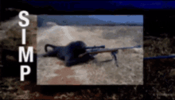
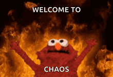
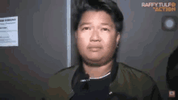
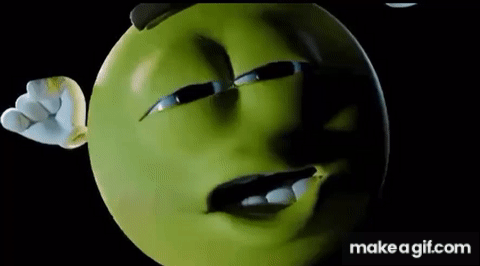
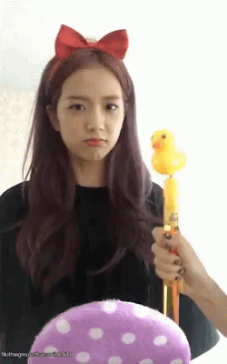
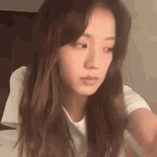

1. The "Sniper Monkey" Meme

This meme features a Monkey with a sniper rifle.
- very nice


This meme features a Monkey with a sniper rifle.

This meme shows a person that is being interviewd trying so hard to not laugh.

This meme features the M&M candy character shaking its butt, often used to express excitement or anticipation.

This meme features Jisoo mimicking a duck toy, which became popular for its cute and playful expression.
she's also my bias so back off!

This meme features Jisoo being random, which became popular for its unexpected and humorous moments.
The Jisoo obsession reignites